Nasi Lemak
Nasi lemak is a dish originating in Malay cuisine that consists of fragrant rice cooked in coconut milk and pandan leaf. It is commonly found in Malaysia, where it is considered the national dish. It is also a native dish in neighbouring areas with significant ethnic Malay populations such as Singapore and Southern Thailand. In Indonesia, it can be found in several parts of Sumatra, especially the Malay regions of Riau, Riau Islands and Medan.It is considered an essential dish for a typical Malay-style breakfast. Nasi lemak is featured as a national dish in Malaysian tourism brochures and promotional materials.
VIEW RECIPE
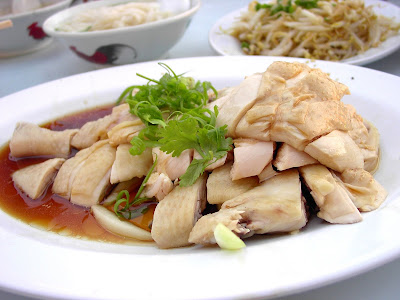
Bean Sprouts Chicken
Nga Choi Gai or Bean Sprouts Chicken (芽菜鸡), is one of the old-school dishes that come to mind at the mention of Ipoh's famous cuisine. Now, you can savour the authentic tastes of Ipoh at Ipoh Lou Yau Bean Sprouts Chicken.
- by
- 1 Hour
- 200 Likes
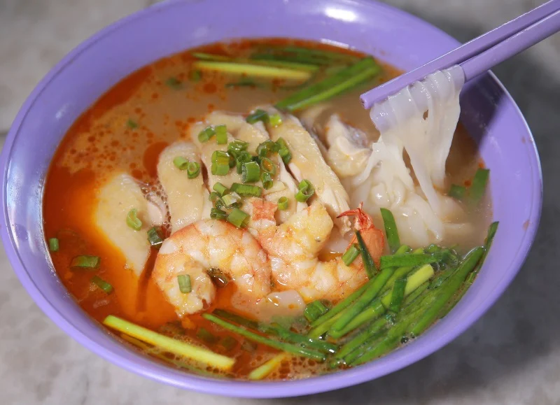
Kai See Hor Fun
The secret of this noodle dish lies in the incredibly flavoursome soup coupled with the vividly orange layer of oil that comes from boiling the prawn heads. A handful of shredded tender poached chicken, halved shrimps, and chopped chives.
- Mummy's
- 20 Mins
- 180 Likes
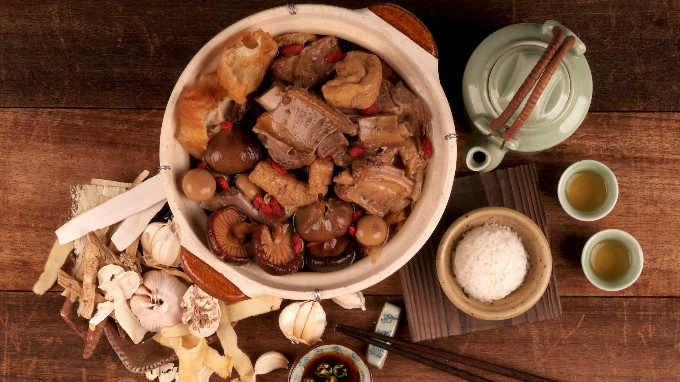
Bak Kuh Teh
Bak kut teh is a pork rib dish cooked in broth popularly served in Malaysia and Singapore where there is a predominant Hoklo and Teochew community.The name literally translates from the Hokkien dialect as "meat bone tea"
- Jane
- 110 Mins
- 146 Likes
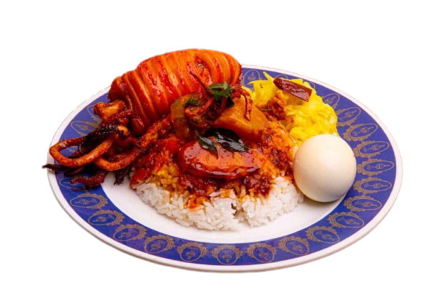
Meat, Rice
Nasi Kandar
Nasi kandar is a popular northern Malaysian dish from Penang, originally introduced by Tamil Muslim traders from India. The meal consists of steamed rice combined with an array of distinct curries, sides dishes, and gravies. The selection of curries consists of various blends of vegetables, seafood or meat.
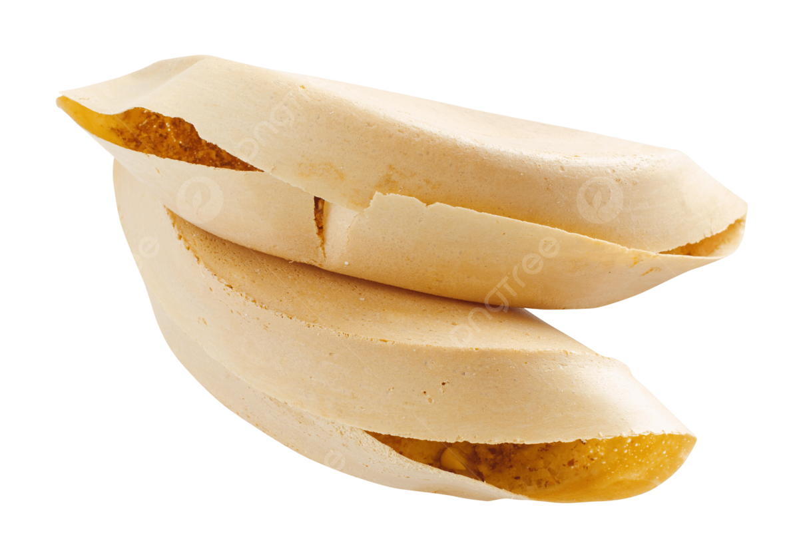
Dessert
Apam Balik
Apam balik (literally means overturned pancake) is made out of simple ingredients. Instead of baking the butter, it is cooked in a pan and done within minutes. The sweetness is then supported with a hint of saltiness. Cream corn which is added further enhances the taste of the pancake.
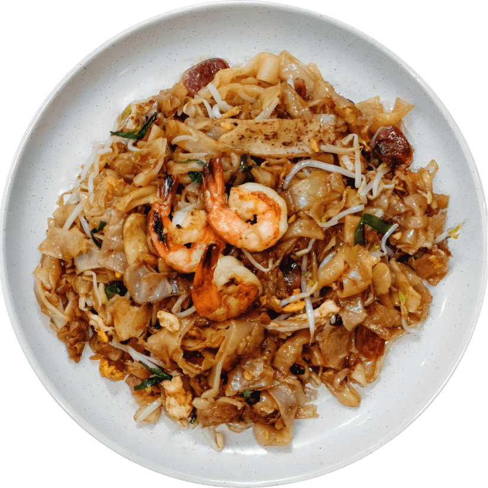
Noodle
Char kway teow
Char kway teow is one of the most popular street dishes in Malaysia and Singapore. Despite numerous regional varieties, it is usually made with flat rice noodles, shrimps, eggs, cockles, bean sprouts, chives, and Chinese sausage. All the ingredients are usually fried and coated in soy sauce.
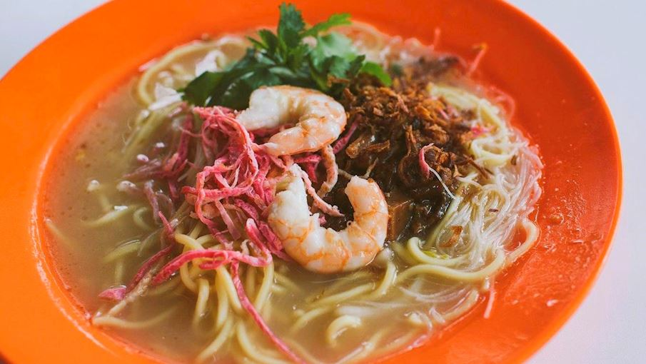
Noodle
Nyoya Lan Mee
Lam mee is a traditional Malaysian dish of Nyonya people. It's made by cooking yellow rice noodles in a gravy made from the stock of prawns and chicken or pork ribs. The gravy is the real star of this dish, with a great mix of seafood flavors from the prawns and sweetness coming from the pork ribs.
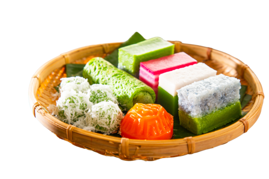
Dessert
Kuih Lapis
While there are many types of kuih, kuih lapis is probably the most visually memorable. It gets its name from the use of alternating colored layers. There are versions with two layers (e.g., green and white), while others have a rainbow color palette.
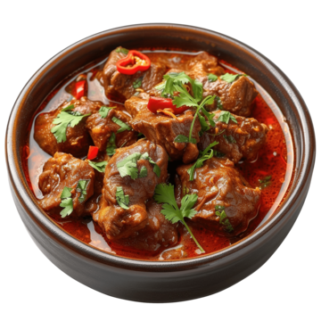
Meat
Goat Curry
Goat curry that is popular in Malaysia and Indonesia. It is made with a combination of goat meat cut into chunks, potatoes, tomatoes, curry leaves, ginger, onions, coconut milk, chili peppers, and various other spices such as galangal.
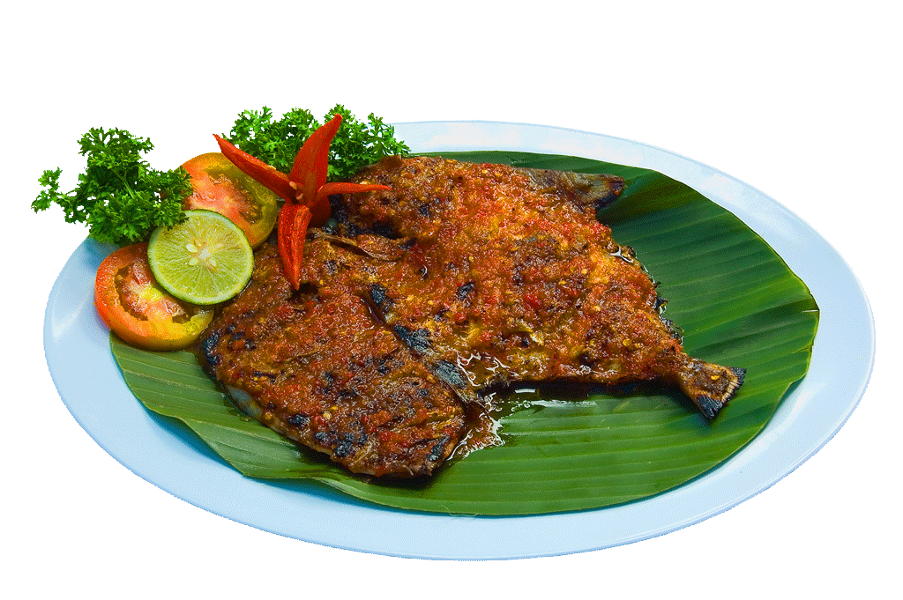
Meat
Grilled Fish
Perlis is the most northern state in Peninsular Malaysia and with close ties to Thailand, it's no surprise that many famous Thai dishes are commonly found here. However, the most iconic food here would have to be ikan bakar.
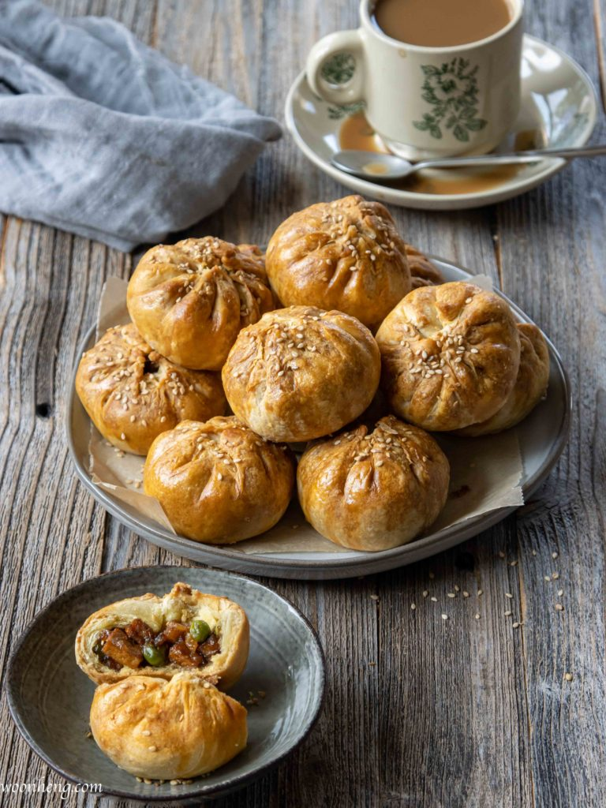
Dessert
Siew Pau
One of the most well-known food in Seremban is the flaky baked BBQ pork buns: Seremban Siew Pau. Unlike its fluffy bun cousin, these have a buttery flaky crust that is baked to perfection with a sweet and savory filling. It's perfect for an afternoon treat
Well-known Food
Well-known Food
Well-known Food
Well-known Food
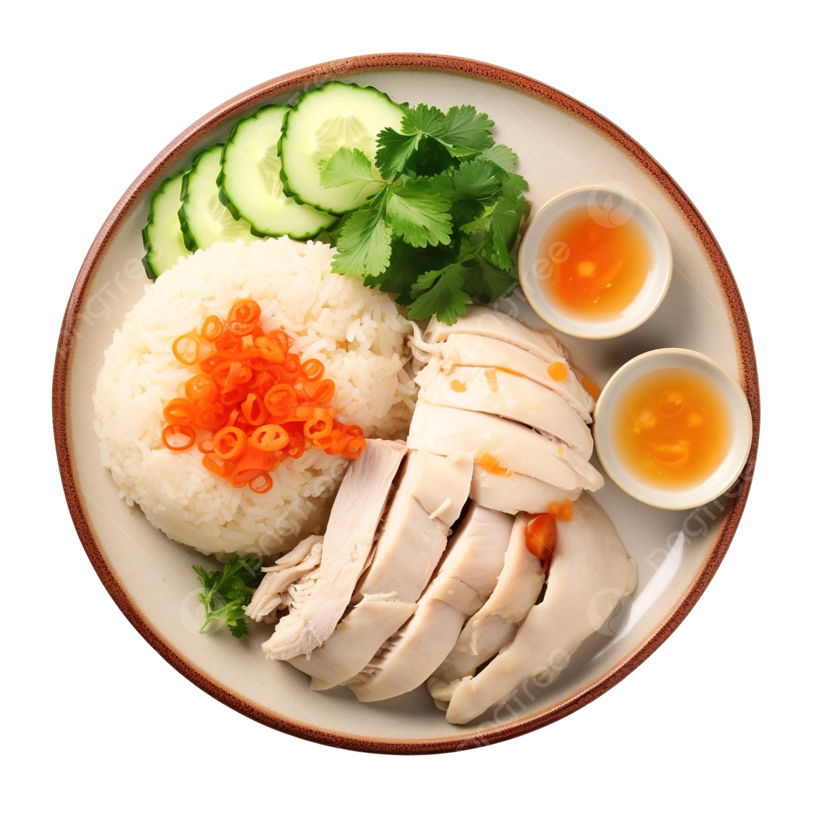
Hainanese Chicken Rice
Hainan Chicken Rice is a classic dish beloved by people in Singapore and all over Asia. Served room temperature, the chicken is incredibly silky. But the rice is really the star—cooked in the broth from poaching the chicken, served with a trio of condiments. Hainanese chicken rice has become a famous dish but it's especially popular in South East Asian countries like Singapore, Malaysia and Thailand.
- Judy
- 155 Mins
- 190 Likes
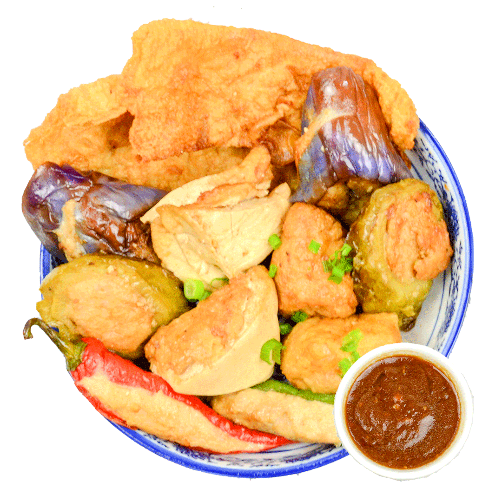
Yong Tau Foo
Yong tau foo is a Chinese cuisine that has become one of Malaysia's most famous street foods. It is a Hakka Chinese food, and the word in Chinese 酿豆腐 means stuffed tofu. This Chinese cuisine has evolved in Malaysia with its interpretation, including various vegetables besides tofu. They are either deep-fried, pan-fried, or served by boiling in soup stock and with a dipping sauce or curry..
- KP Kwan
- 40 Mins
- 100 Likes
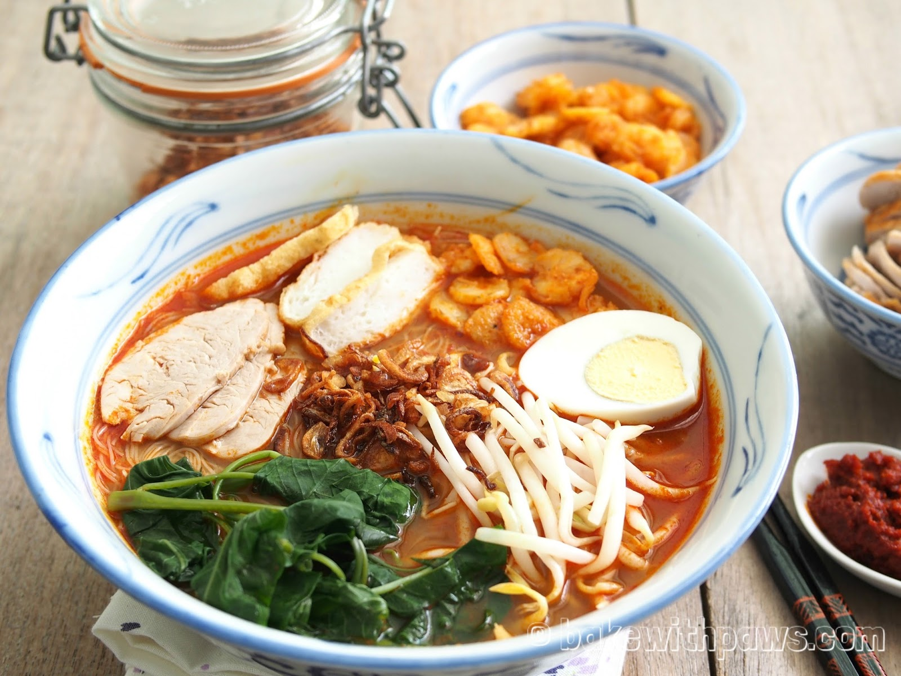
Penang Hokkien Mee
Penang Hokkien mee (Prawn Noodle) or Hae Mee, as known to the locals, is a soupy yellow egg noodle dish with prawns. Popular in Penang, Malaysia, the broth of these noodles has a rich prawn flavour. Accompanied with boiled egg, kangkung (water spinach), bean spouts, fried shallots and the special sambal, each bite delivers an orchestra of flavours. You can also add other toppings that you prefer.
- Bee Yinn
- 160 Mins
- 300 Likes
Featured Recipes
Whether you are looking for easy weeknight dinner recipes, or fast and fresh recipes, here is a delicious selection!
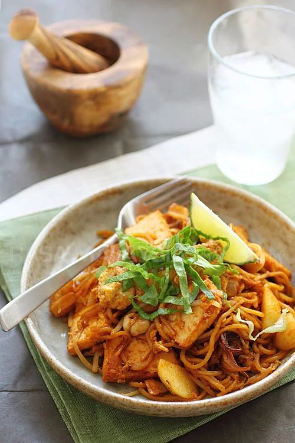
Mee Goreng
Mee Goreng is one of the most popular fried noodle dishes in Malaysia and Indonesia. This Indian Mamak Mee Goreng recipe is authentic, easy and so good!
Read More
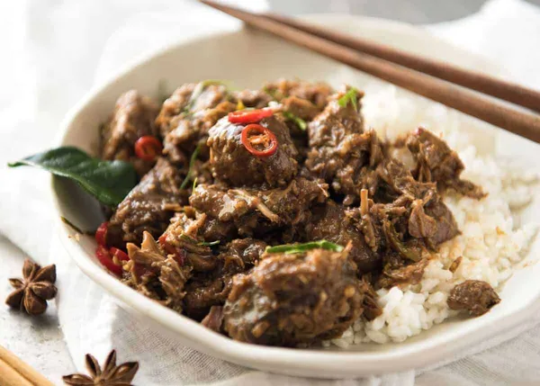
Beef Rendang
Beef Rendang is a Malaysian curry and is considered by many to be the king of all curries! To say it's extravagantly delicious is an understatement.
Read MoreEnjoy breakfast
There is no better morning than one that starts with good food. An authentic Malaysian breakfast menu is packed with sweet, spicy, and savory dishes that draw vast influence from Indonesian and Chinese dishes.
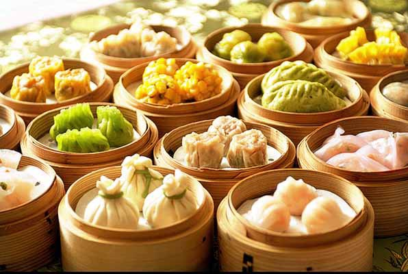
Dim Sum
Dim sum is a large range of small Chinese dishes that are traditionally enjoyed in restaurants for brunch, with many varieties of small-plate Chinese foods, usually meat or vegetables in dough or a wrapper that is steamed, deep-fried or pan-fried.
- Bill's Family
- 1 Hour
- 200 Likes
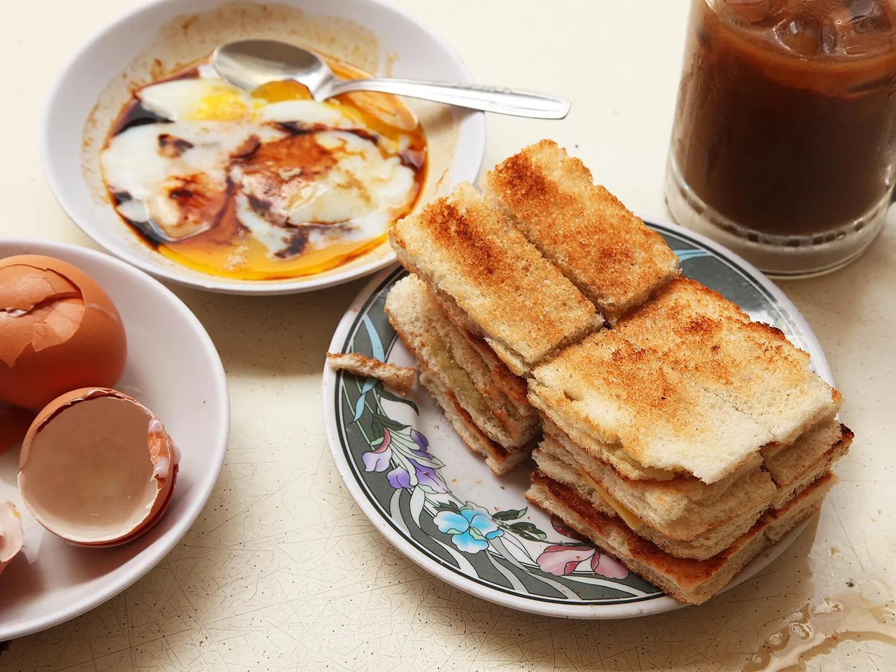
Kaya Toast
Kaya toast is a dish consisting of two slices of toast with butter and kaya, commonly served alongside kopi and soft-boiled eggs. The dish was believed to be created by Hainanese immigrants to the Straits Settlements in the 19th century while serving on British ships.
- Bee Yinn
- 5 Mins
- 180 Likes
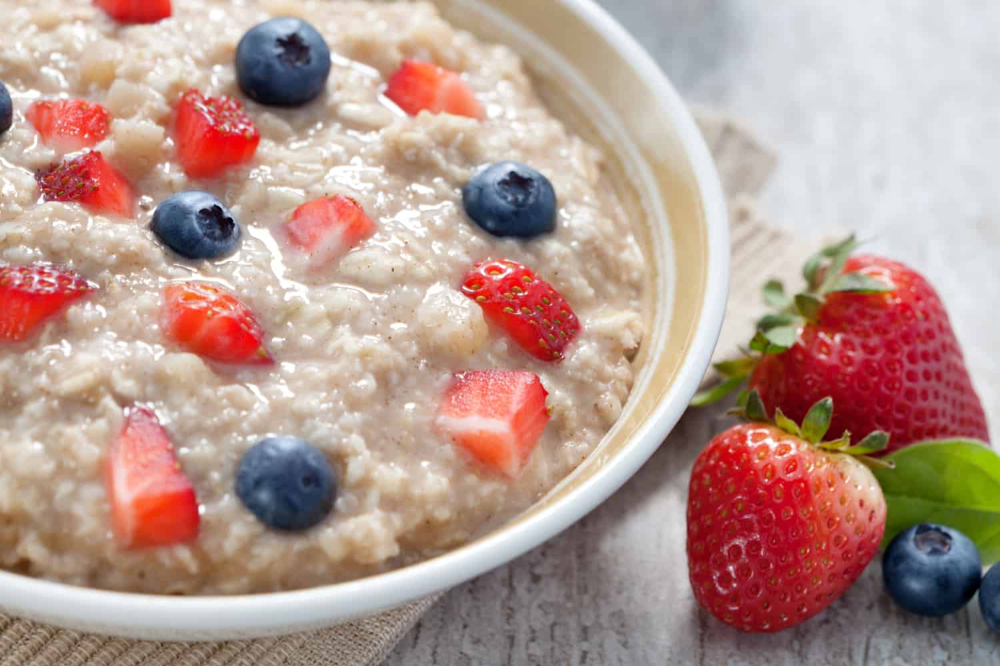
Porridge
Porridge is a warm, comforting dish made by boiling grains, typically oats, in water or milk until they become soft and creamy. It's a versatile dish enjoyed around the world, often served as a hearty breakfast or a soothing meal.
- Jam Oliver
- 10 Mins
- 146 Likes